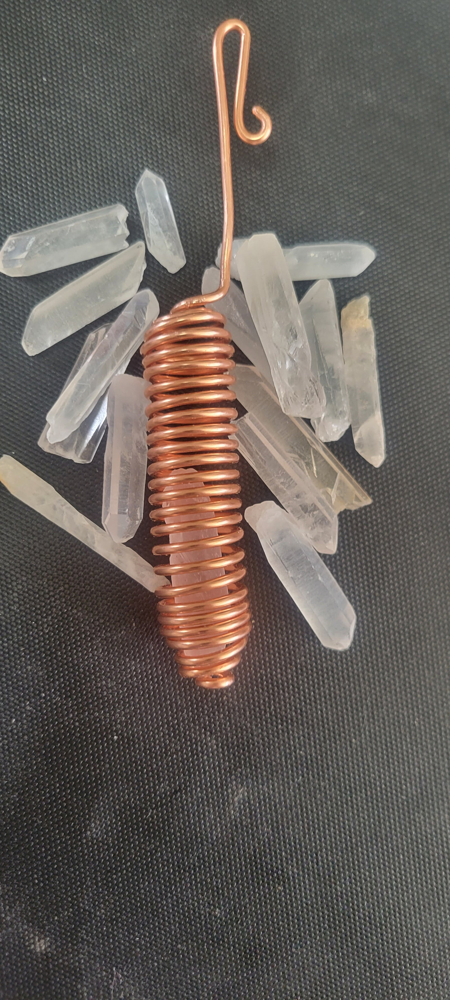
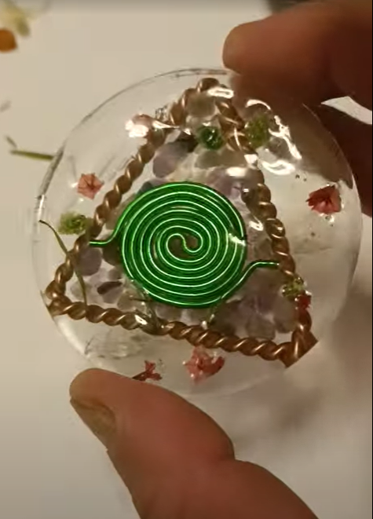
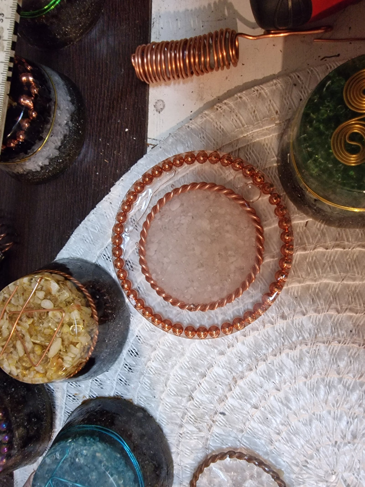
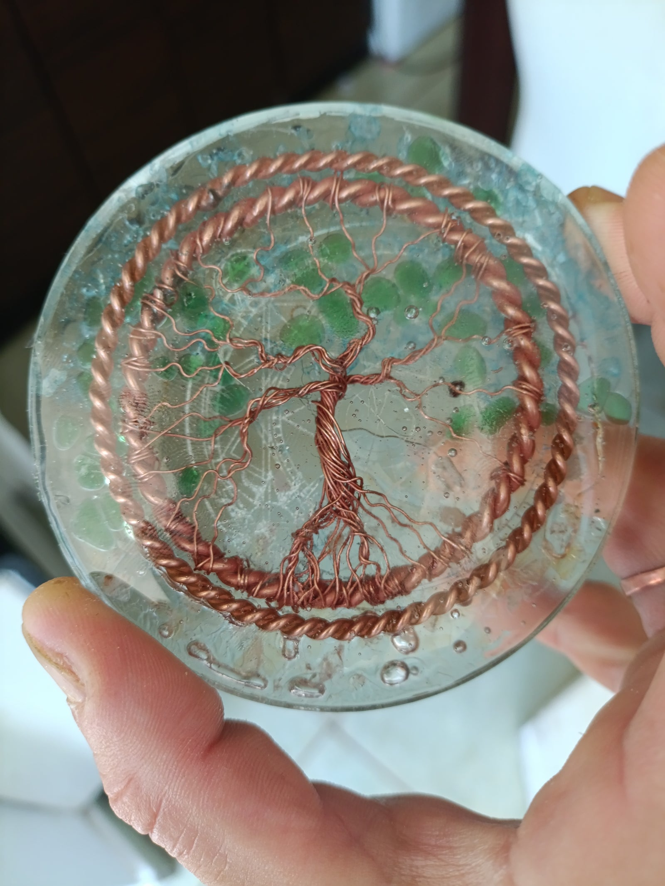
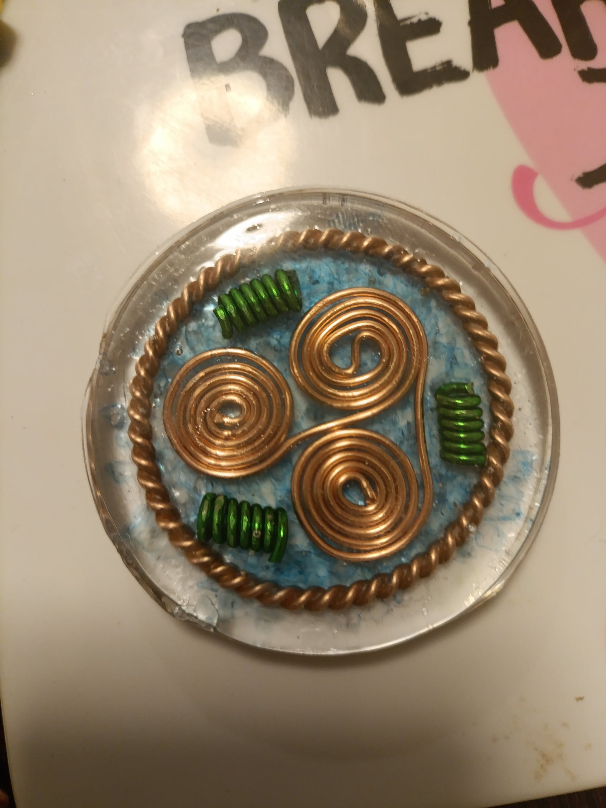

Eszközök
Különleges energetikai eszközök, tenzor gyűrűk és harmonizálók a mindennapi egyensúlyért.

Pohárba akasztható rézspirál
Hegyikristályokkal belül
Ez az eszköz a víz energetizálására szolgál. A középen elhelyezett hegyikristály a tisztaság és fény energiáját adja át, míg a spirál formájú réz a kozmikus és földi rezgések összekötője. A víz így új struktúrát kap, minden korty frissítőbbé és élőbbé válik.
A réz, mint esszenciális nyomelem, fontos szerepet játszik a hemoglobin képződésében, az antioxidáns enzimek működésében, az idegrendszer és az immunrendszer támogatásában, valamint a kollagén-szintézisben és a pigmentációban. Bár ezek a hatások főként belsőleges bevitelhez kötődnek, a rézspirál tudatos használata és jelenléte energetikai fókuszt és tudatos jelenlétet ad a mindennapokhoz.
A hegyikristályok tiszta, harmonizáló energiájuk révén támogatják a víz energetikai tisztítását, segítenek az érzelmi stabilitás megtartásában, a belső egyensúly fenntartásában, valamint a tudatos jelenlét és fókusz erősítésében.
A réz antimikrobiális hatása tudományosan igazolt: képes elpusztítani különböző kórokozókat a felületeken, így a spirál nemcsak energetikai, hanem vízminőségi előnyt is biztosít. A spirál formája elősegíti az energiaáramlást, harmonizálja a víz rezgését, és minden kortyot tisztábbá, élőbbé tesz.

Vízstrukturáló poháralátét
Ametiszt & Lost Cubit (6 cm)
Ez az egyedi kézműves poháralátét a víz energetikai szerkezetének harmonizálására készült. A középpontban elhelyezkedő ametiszt kristályok békét, tisztaságot és spirituális éberséget sugároznak, melyek erősítik a víz tisztító rezgéseit és támogatják a belső nyugalmat. Az ametiszt a hagyományokban mindig is a lélek tisztítója volt, segítve a tudatosság emelkedését és a stressz oldását.
A kristályokat körülölelő Lost Cubit méretből készült háromszög Slim Spurling tensor technológiájának egyik formája, amely erőteljes energetikai mezőt hoz létre. Ez a térstruktúra a víz természetes rendeződését és életerejének erősödését segíti elő, harmonizálva annak rezgéseit.
A kompozíciót a Triskelion víz szimbólum központi eleme zárja össze, amelyet zöld alumínium huzalból formált spirál jelenít meg. Ez a jin–jang-szerű spirál az ellentétek egyensúlyát, a víz állandó mozgását és a polaritások harmóniáját fejezi ki. Energetikailag erősíti a poháralátét egész struktúráját, és közvetlenül a vízbe sugározza a harmónia, tisztaság és áramlás rezgéseit.

Réz–kristály poháralátét
Empowerment Cubit tensor gyűrűvel (9 cm)
Ez a kézzel készült poháralátét a tudatos energia-harmonizálás elve mentén született. A körkörös forma, a réz és a kristályok együttese egy kiegyensúlyozott, fókuszált teret hoz létre, amelyet elsősorban víz, italok és mindennapi tárgyak energetikai rendezésére, valamint a struktúrálására ajánlok.
A külső körben elhelyezett rézgyöngyök egységes áramlást biztosítanak, míg a középpontban található Empowerment Cubit tensor gyűrű (188 MHz) stabil, emelő minőséget képvisel. A tensor gyűrű belsejében elhelyezett apró hegyikristályok a tisztaságot, erősítést és információ-rendezést szolgálják.
Ez az alátét ideális választás lehet azok számára, akik nemcsak funkcionális tárgyat keresnek, hanem egy olyan kézműves alkotást, amely tudatos szándékkal és precíz kivitelezéssel készült.

Energetikai poháralátét
Élet fája, Lazurit, Citrin (9 cm)
Ez az egyedi poháralátét a szakrális szimbólumok és a kristályok erejét egyesíti a Slim Spurling által felfedezett tensor technológiával. A szerkezet középpontjában egy Ascension Cubit tensor gyűrű öleli körbe az Empowerment Cubit tensor gyűrűt, amelyek együttesen erőteljes energiateret hoznak létre, támogatva a víz strukturálódását és rezgésszintjének emelés.
A belső gyűrűben helyezkedik el a rézből megformált Élet fája, amely a teremtés teljességét, az ég és föld közötti kapcsolatot, valamint az emberi létezés spirituális kibontakozását szimbolizálja. Ez a szimbólum mély emlékeztető az összekapcsoltságra, és arra, hogy minden életfolyamat a harmónia és fejlődés része.
A kristályok közül a zöld lazurit békét és egyensúlyt sugároz, támogatja a szív energiaközpontját, valamint elősegíti a belső igazság felismerését és kifejezését. A citrin ezzel összhangban a nap energiáját hordozza: vitalitást, örömöt és bőséget közvetít, miközben segíti az energiaáramlást és a pozitív gondolkodást.
A poháralátéteket lehet kombinálni más és más szimbólumokkal, kristályokkal, ásványokkal és színekkel. Az árat ez nem befolyásolja!

Vízstrukturáló poháralátét
Kék kvarc, Lost Cubit & Triskelion (6 cm)
Ez az egyedi kézzel készített poháralátét a víz energetikai harmonizálására született. A műgyanta rétegekben elhelyezett kvarckristály erőteljes tisztító és energizáló tulajdonságairól ismert, mely támogatja a víz természetes szerkezetének helyreállítását.
A kristályt körülölelő Lost Cubit tensor gyűrű egyedi frekvenciájával támogatja a teret és felerősíti az ásvány hatását.
Zöld Lazurit Triskelion
Tensor Vízstrukturáló Poháralátét (6 cm)
Ez a kézzel készített vízstrukturáló poháralátét a Sacred Cubit (144 MHz) triskelion vízszimbólumát egy Lost Cubit (177 MHz) tensor mezőben hordozza. A kettős rendszer célja a víz természetes örvénylő, koherens állapotának támogatása.
A zöld lazurit a szívközpont és a belső harmónia rezgéséhez kapcsolódik, míg a triskelion forma a víz folyamatos mozgását, áramlását és megújulását szimbolizálja. A Sacred Cubit frekvencia stabilizál, a Lost Cubit pedig tágítja és tisztítja a finomenergetikai teret.
Használat közben a pohár alá helyezve a szerkezet segíthet a víz „élettelibb”, lágyabb érzetű minőségének kialakításában — tudatos jelenléttel és szándékkal alkalmazva.
"Nem eszköz, hanem rendszer.
Nem dísz, hanem emlékeztető a víz élő természetére."
Fontos: Ezt a terméket jelenleg Zöld aventurinnal tudom elkészíteni!

Tensor gyűrűk
Energetikai frekvencia: 144 MHz
Tulajdonságai és hatásai:
- Harmonizálja a fizikai testet és a környezetet.
- Erőteljes földelő hatás.
- Segíti a fizikai gyógyulási folyamatokat, fájdalomcsillapításban is használható.
- Tisztítja a vizet, ételeket, italokat.
- A test körül elhelyezve kiegyensúlyozza a finomenergiákat.
- Véd az elektroszmog és geopatikus stressz ellen.
- Megnyugtató, stabilizáló energiát hoz, erősíti a vitalitást.
Használat: vízkezelésre, ételek energizálására, alvásnál a párna alá, fájdalmas testrészek köré helyezve.